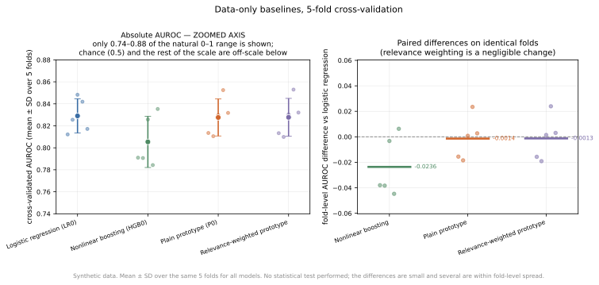
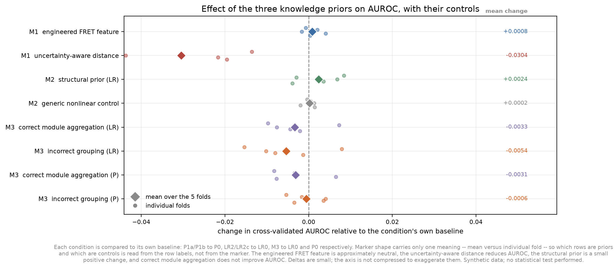
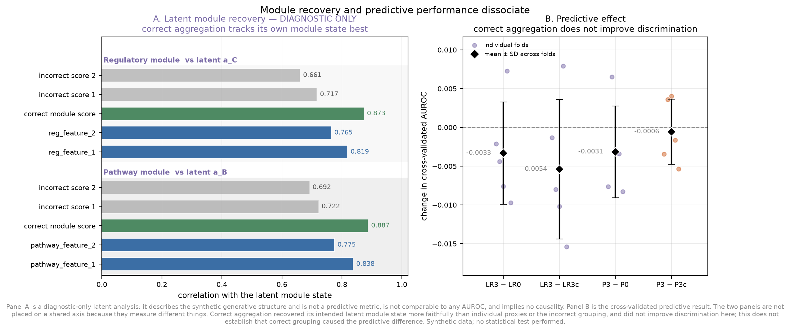
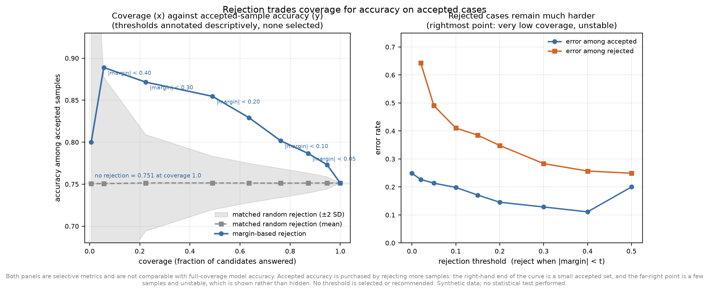
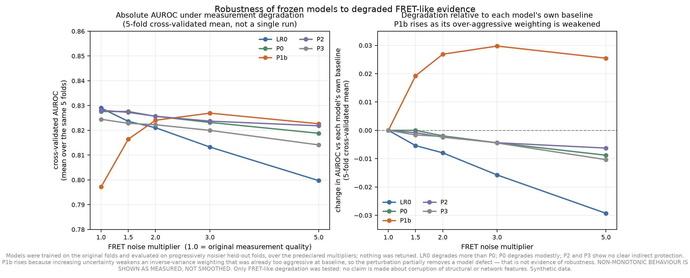

Controlled synthetic study
Knowledge-Informed ML: When Better Structure Does Not Mean Better Prediction
A controlled synthetic study of biological priors, interpretable prototype models, selective prediction, and robustness.
Domain knowledge is often expected to improve machine learning. In practice, the outcome depends on how that knowledge is represented and used. This project uses a controlled synthetic biological classification problem to examine how experimental, structural, and module-level priors affect prediction, interpretability, selective decision-making, and robustness.
Synthetic study — not a real RNA folding or FRET prediction system.
Why this problem matters
Having knowledge is not the same as using it well
Biological machine learning is often attempted with limited data, while the researcher simultaneously holds forms of knowledge that are not present in the data table.
A mechanistic understanding, a pathway diagram, a structural constraint, or a set of experimental expectations can all be available before any model is fitted. The natural response is to pass that knowledge into the model and expect an improvement.
The real difficulty is elsewhere. The question is not whether knowledge exists, but whether its mathematical encoding — a weighted distance, an engineered feature, an aggregation rule, a regulariser — is one that this particular model and this particular dataset can actually exploit. The same knowledge can be injected in several ways, and the choice of mechanism can matter more than the knowledge itself.
There is a second reason to be careful. Prediction and biological faithfulness are not the same objective. A representation can become more faithful to the intended biology while becoming no more useful for telling classes apart. Keeping those two goals separate is what makes the results below readable.
Controlled synthetic study design
A simulator where the hidden relationships are visible
Everything on this page comes from one synthetic dataset with a known generating rule. That is the point of the design: it makes normally hidden structure inspectable.
The study uses:
- latent biological states that no model is ever given;
- experimental / FRET-like evidence read out from a separate, deliberately independent measurement process;
- structural evidence — free-energy-like score, stem count, structural consistency;
- regulatory and pathway module evidence organised into four predefined modules;
- noisy observable features, including two pure distractors that carry no label information;
- a binary plausibility label, sampled rather than read off, so the two classes overlap and the problem is not trivial;
- latent variables retained only for diagnostic analysis — recorded for one figure, never used for training or tuning.

The simulator is designed to make otherwise hidden relationships observable. It is not intended to reproduce real RNA biophysics.
Baseline models
The data-only baselines are all close together
Before any prior knowledge is introduced, four straightforward models are compared on the identical five-fold partition.
| Model | AUROC | Prior knowledge used |
|---|---|---|
| Logistic regression | 0.8290 ± 0.0156 | none |
| Plain prototype | 0.8276 ± 0.0168 | none |
| Relevance-weighted prototype | 0.8277 ± 0.0172 | none (weights learned from data) |
| Gradient boosting (HGB) | 0.8054 ± 0.0233 | none |
Interpretation: a simple regularised linear model is already highly competitive in this synthetic, moderate-dimensional setting. The three closest baselines sit within roughly one fold-level standard deviation of each other, and learning explicit relevance weights did not move the prototype off the uniform baseline.
With approximately 800 samples and a modest number of observed features, this study operates in a regime where logistic regression can be difficult to beat. The effect of sample size was not systematically explored.
Supporting figure: baseline comparison and paired differences

This baseline similarity is the reason the rest of the study tests what a prior adds, rather than which architecture wins.
Findings
Four results that challenge simple expectations
Each finding below is presented with the figure that produced it. Effect sizes are deliberately kept modest in both the text and the plots: no statistical test was performed on any of these model comparisons, so no significance is claimed about them.
Finding 1
Prior knowledge helped only when its representation was useful
Several knowledge-informed conditions were tested across three prior families — experimental/FRET-like, structural, and network/module — alongside the relevant data-only or complexity-matched controls. All four effects are small, and the largest one is negative.

| Condition | Δ AUROC | SD |
|---|---|---|
| M1 engineered FRET feature | +0.0008 | 0.0023 |
| M1 uncertainty-aware distance | −0.0304 | 0.0173 |
| M2 structural prior (logistic) | +0.0024 | 0.0056 |
| M2 generic nonlinear control | +0.0002 | 0.0014 |
| M3 correct module aggregation (logistic) | −0.0033 | 0.0066 |
| M3 incorrect grouping (logistic) | −0.0054 | 0.0090 |
| M3 correct module aggregation (prototype) | −0.0031 | 0.0059 |
| M3 incorrect grouping (prototype) | −0.0006 | 0.0042 |
- The engineered FRET feature is approximately neutral (+0.0008 AUROC), providing little evidence of predictive benefit in this setting.
- The structural prior produces a small positive change (+0.0024 AUROC), larger than the selected generic nonlinear control (+0.0002) in this experiment. The effect is modest and no statistical significance test was performed, so it should not be generalized beyond this synthetic setting.
- The uncertainty-aware distance reduces AUROC by about 0.03. This is the largest single effect in the project, and it is a regression. It is reported as measured.
- Correct module aggregation does not improve AUROC, in either model family, and does not separate cleanly from the deliberately incorrect grouping.
The result is not that domain knowledge is useless. It is that knowledge and predictive utility are different things, and the mathematical mechanism used to inject knowledge matters.
Finding 2 — the central result
Better recovery of biological structure did not guarantee better prediction
The module aggregation was checked against the latent states it was designed to recover. It recovered them. Prediction did not follow.

Panel A — structural recovery
Correlation of each candidate aggregation with its intended latent module state. For the regulatory module, the correct score reaches 0.873 against 0.819 and 0.765 for the individual features and 0.717 / 0.661 for the incorrect groupings. For the pathway module, 0.887 against 0.838 and 0.775, and 0.722 / 0.692.
The correct aggregation tracks its own module state better than either
individual proxy, in both modules. Source:
results/module_latent_diagnostic.json.
Panel B — predictive effect
Change in cross-validated AUROC: correct minus data-only baseline −0.0033 (logistic) and −0.0031 (prototype); correct minus incorrect grouping −0.0054 and −0.0006.
Correct aggregation does not improve discrimination in either family, and the
deliberately incorrect grouping performs similarly. Source:
results/network_knowledge_cv.json.
- The correlations in Panel A are diagnostic-only: they use latent truth, were never used for training or tuning, and are not predictive metrics.
- Predictive AUROC nevertheless did not improve.
- The incorrect grouping performed similarly, or slightly better predictively.
- This does not establish that biological correctness caused the loss. The two panels are kept deliberately unlinked.
A representation can become more faithful to the intended biological organization while simultaneously losing information useful for discrimination.
Reading the recovery in Panel A as evidence that the prior works would be a mistake. The simulator's latent structure was recovered, and the predictive metric did not improve.
Finding 3
Prototype geometry can identify difficult cases
The classifier is allowed to abstain. The signal it uses is not a probability — it is the distance margin between the two prototypes.

- The prototype distance margin acts as an empirical difficulty signal. Error rate falls steadily across quintiles of the margin, from 0.425 in the most ambiguous quintile to 0.113 in the fourth.
- Low-margin cases are more error-prone, which is the direct justification for allowing abstention at all.
- Rejecting them raises accuracy among accepted samples: accepted accuracy rises from 0.7512 at full coverage to 0.8546 at 49.0% coverage and 0.8715 at 22.4% coverage.
- Matched random rejection does not produce the same gain. The control stays flat near 0.751 across the whole sweep, inside a widening band of ±2 standard deviations, while the margin rule sits clearly above it.
- Higher accepted accuracy is purchased with lower coverage. The curve is a trade-off, not an improvement: every step up in accepted accuracy costs answered samples.
The rejected cases were not significantly closer to the
simulator's latent probability of 0.5, so the margin should not be
interpreted as calibrated probabilistic uncertainty. It orders difficulty well in
this experiment, but the latent diagnostic did not show evidence that the margin
tracks the generator's probability-based ambiguity.
Source:
notebooks/08_rejection.ipynb, latent diagnostic.
The low-coverage end of the curve is shown rather than hidden. It rests on a handful of accepted samples and is unstable; it is not presented as a headline figure, and no threshold is recommended.
Finding 4
Stress testing can reveal why a model behaves as it does
Models were trained once on the original folds and then evaluated on progressively noisier held-out folds. Nothing was retuned, and only the FRET-like columns were perturbed.

- Logistic regression degrades more than the plain prototype under worsening FRET-like evidence: at the largest multiplier the change against its own baseline is −0.0293 for logistic regression against −0.0088 for the prototype.
- The prototype degrades only modestly under this particular perturbation.
- The structural and network priors show no clear indirect protection (−0.0063 and −0.0103 at the same multiplier).
- The uncertainty-aware model improves as noise increases, by +0.0255 — and that improvement is not robustness. Increasing the measured uncertainty weakens an inverse-variance weighting that was already too aggressive at baseline, so the perturbation partially removes a model defect. The worst model in Finding 1 is the one that improves here.
Robustness should be investigated mechanistically rather than inferred from a single performance curve. A rising curve can indicate a repaired defect rather than a durable advantage.
Scope: only FRET-like degradation was tested. Structural and network feature corruption were not tested, and no claim is made about them.
Discussion
What the four findings add up to
Stepping back from the individual experiments.
Knowledge versus predictive signal
Biological knowledge can improve representation without improving classification. Finding 2 is the clearest case: the intended latent structure was recovered more faithfully than by any alternative grouping, and discrimination did not follow. The two qualities have to be measured separately, because a method can succeed on one while standing still on the other.
Model complexity
More complex models are not automatically useful when a strong simple baseline already captures much of the signal. Here a regularised linear model matched or exceeded both prototype variants and a gradient boosting model, on a problem with 800 samples and a modest number of features. Complexity earns its place only once the problem demands it.
Interpretability versus accuracy
These are related but distinct objectives and should be evaluated as such. The prototype model was chosen because its decision rule can be written down and inspected, not because it was expected to win. It did not lose — but the reason to keep it is that its margin, its prototypes and its relevance weights are all inspectable.
Confidence versus uncertainty
A model-specific confidence signal may identify difficult decisions without representing calibrated probability. The prototype margin separates harder from easier cases in this experiment, yet rejected samples were not closer to the simulator's own latent probability of 0.5. A difficulty ranking and a probability estimate are different objects, and only the first is on offer here.
Controlled synthetic studies
Synthetic systems allow access to hidden ground truth that is often unavailable in real biology — that access is what made Finding 2 possible at all. The corresponding cost is that conclusions must remain conditional on the simulator. Nothing here has been tested against real measurements.
Limitations
What this study cannot support
Stated plainly, because these bound every claim above.
- Synthetic rather than real biological data. The dataset is simulated and the FRET-like measurements are generated, not observed.
- Approximately 800 samples, and a modest feature dimensionality.
- Strong performance of logistic regression in this regime, which makes small prior effects hard to distinguish from noise.
- No systematic sample-size analysis. Learning curves across training-set sizes were not run.
- No systematic variation of problem nonlinearity. The degree of interaction and threshold structure in the generating rule was fixed.
- No statistical significance tests for the small model differences, and therefore no significance claims about model differences anywhere on this page. (The one significance check that does exist is the latent diagnostic cited in Finding 3.)
- Simplified biological modules — four synthetic modules in a two-level hierarchy, not curated pathways.
- A simplified uncertainty model, whose over-aggressive weighting is itself one of the findings.
- Only FRET-like robustness perturbation was tested. Structural and network corruption were not explored.
- No claim of superiority over deep learning or modern biological foundation models. None was compared against.
Outlook
Future directions, organised by the questions this study opened
None of the following has been carried out. They are the experiments the results point toward.
A. Sample size and sample efficiency
Run learning-curve experiments across multiple training sizes, holding the generative mechanism fixed. Does biological prior knowledge provide its greatest benefit in low-data regimes? The baselines here are close enough that a difference could plausibly appear only when data are scarce. Multiple independent generator seeds would be needed to separate a genuine sample-size effect from the quirks of one simulated dataset.
B. Problem complexity
Explore increasingly nonlinear generative relationships: interactions, thresholds, hierarchical dependencies, context-dependent effects, and multimodal populations. When does model flexibility become necessary rather than merely available? This is the missing axis behind the current limitation that logistic regression is hard to beat here.
C. Imperfect biological priors
Compare correct, incomplete, noisy, partially incorrect and contradictory prior knowledge — the incorrect-grouping control in Finding 2 is a first step in this direction. How much prior error can a knowledge-informed model tolerate before the prior becomes harmful?
D. Alternative mechanisms for knowledge integration
Future work may compare feature engineering, soft regularisation, constrained losses, graph-based architectures, probabilistic or Bayesian priors, and post-hoc biological validation. Finding 1 shows that the mechanism, not the knowledge, is often the deciding variable — so the mechanism itself is the thing to vary.
E. Multiple forms of uncertainty
Keep four sources distinct rather than collapsing them into one margin: measurement uncertainty (the FRET-like error model), model uncertainty (limited training data), distribution shift (the robustness setting), and biological ambiguity (the simulator's own latent probability). The margin in Finding 3 speaks to difficulty, not to any one of these in particular.
F. Semi-synthetic and real biological validation
A credible progression would run: controlled synthetic data → semi-synthetic biological data → real RNA, structural and experimental benchmarks. The present project has completed the first of these stages only. No stage beyond it has been attempted, and nothing here should be read as evidence that the later stages would succeed.
A priority next experiment: sample size × prior knowledge
Hold the generative mechanism fixed, vary the training-set size, repeat across independent simulated datasets, and measure whether knowledge-informed models reach a given predictive performance with fewer samples than purely data-driven models.
This tests whether prior knowledge acts as a sample-efficiency mechanism — the most direct way to answer the question the baseline table raises. It is proposed here and has not been implemented.
Reproducibility
How to reproduce everything on this page
- Deterministic synthetic generator with fixed random seeds.
- Fixed five-fold cross-validation — stratified, 5 splits,
random_state=0, preprocessing refit inside each training fold. - Fold fingerprint
9b587aa3d19a36f7, asserted at load time so every result file provably used the same partition. - Saved JSON results in
results/, one file per experiment. - Deterministic figure generation — the six figures are built from
those JSON files by
src/make_final_figures.py, which fits nothing and recomputes nothing, and fails loudly if a source or key is missing. Repeated runs are byte-identical. - Latent diagnostic results persisted separately in
results/module_latent_diagnostic.json, explicitly marked diagnostic-only. - Source scripts and notebooks available in the repository, under
src/andnotebooks/.
Each figure on this page carries a caption consistent with
figures/final/CAPTIONS.md, which is the authoritative description of what
the figure set does and does not show.
What this work does not show: no biological or clinical validation; no statistical tests of the model differences and no significance claims; no causal claim linking the structural diagnostic to the predictive behaviour; no claim about corruption of structural or network features; and no selected or recommended rejection threshold.